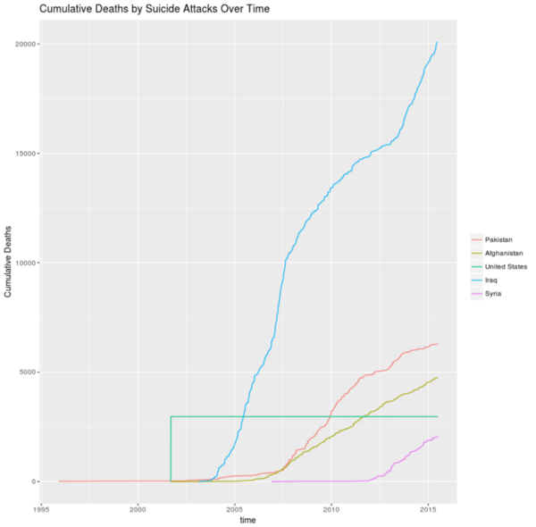
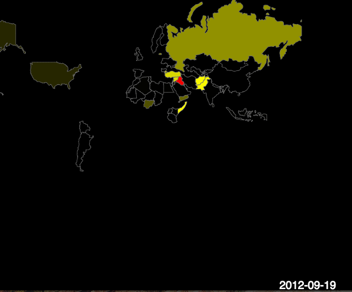
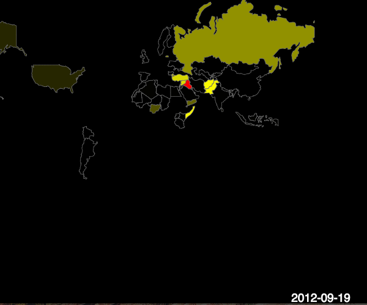

Terrorist Suicide Attacks Visualizations
 

This project challenged my team and me to find the best way to visualize a vast amount of data. We had to approach it from two different angles: clear communication and persuasion. Our task was to use the same dataset and create two visualizations - one that presents unbiased and in-depth information, and the other that persuades the audience in the most compelling way possible.
To achieve our clear communication visual, we designed a simple graph that provides the audience with a clear understanding of the dataset without any bias. For our persuasive visualization, we focused on a dataset on suicide attacks, aiming to show the audience the location and number of casualties in Iraq, the country most impacted by this issue.
To achieve this, we utilized a Javascript library called P5, which allowed us to create an interactive map that shows the frequency of suicide attacks over time. Every time an attack occurred in a particular location, the area was highlighted in red. If the same location was attacked multiple times, the red was replaced with yellow, emphasizing the severity of the situation. We even added sound to the visualization to enhance its persuasive power. Overall, this project taught me how to approach data visualization from multiple angles to create the most effective visualizations possible.